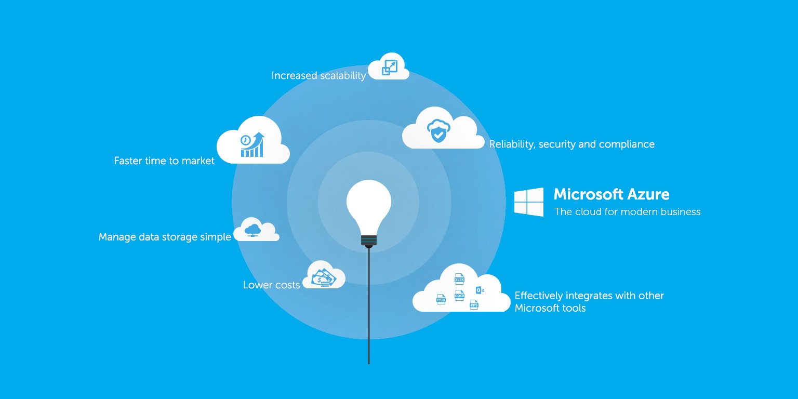
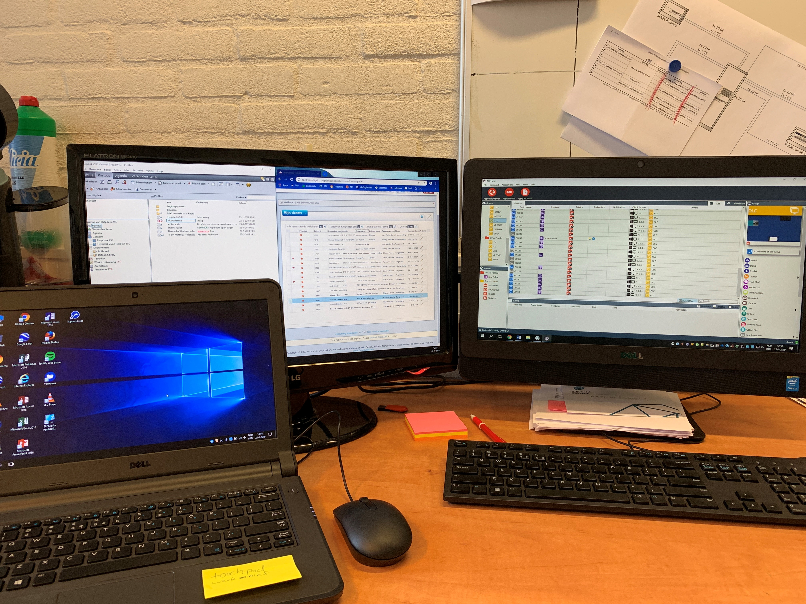
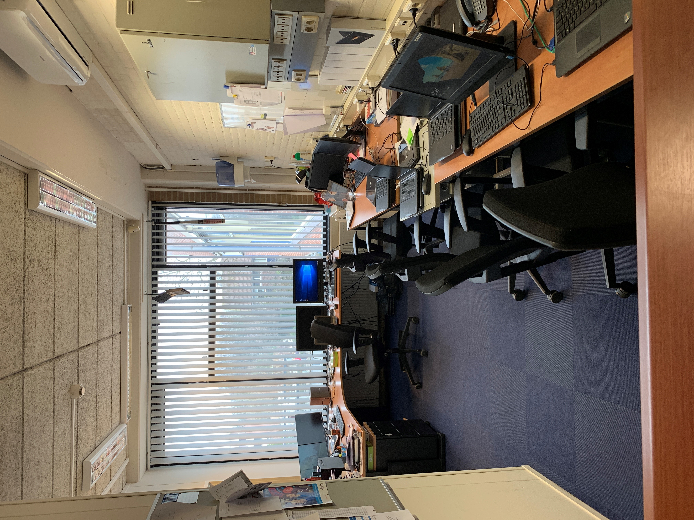
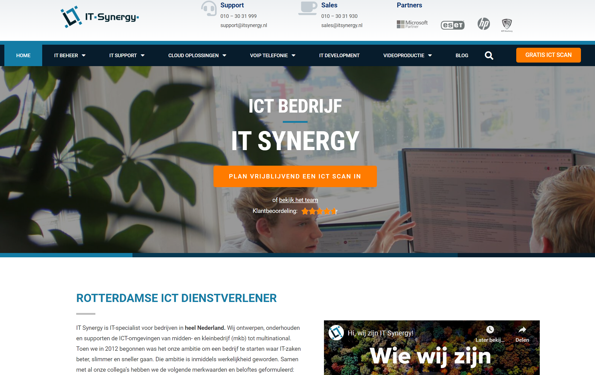
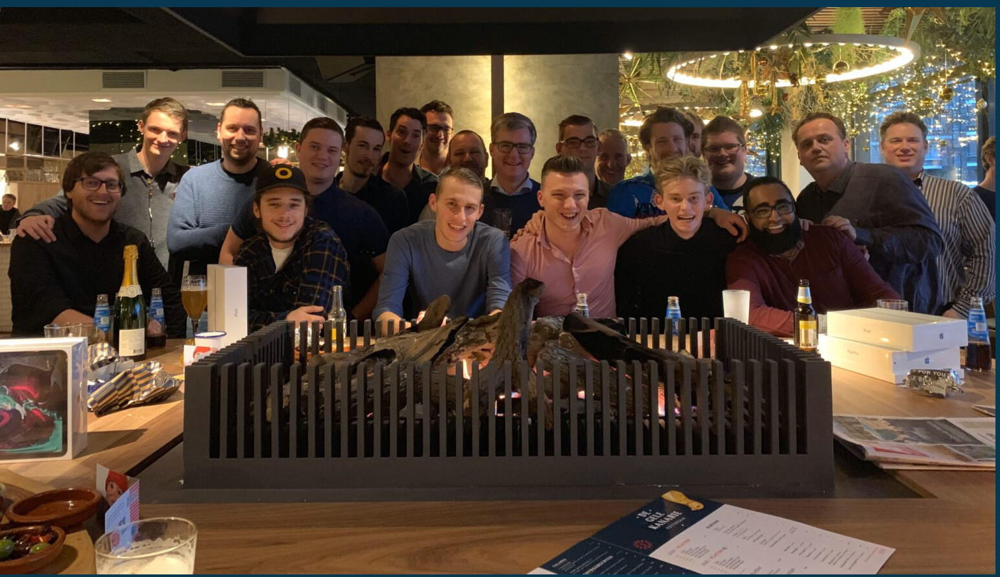
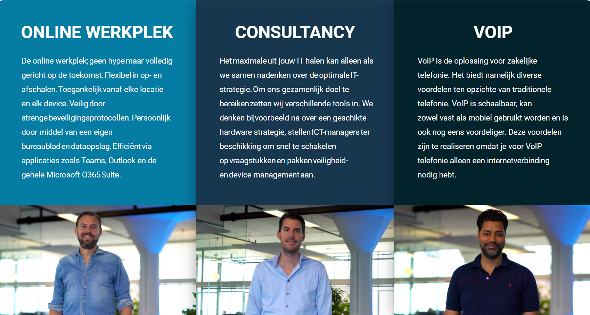
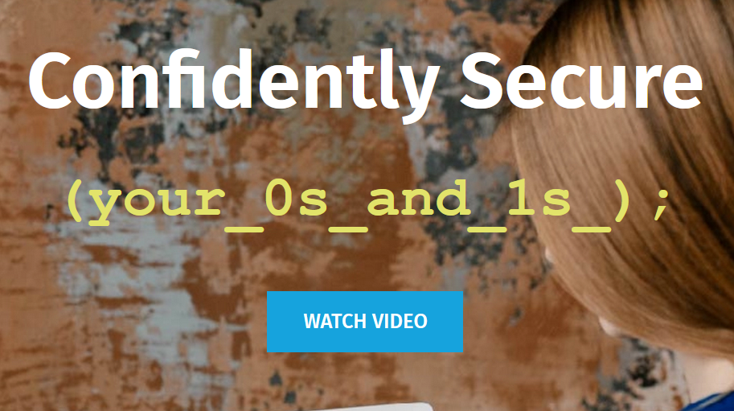
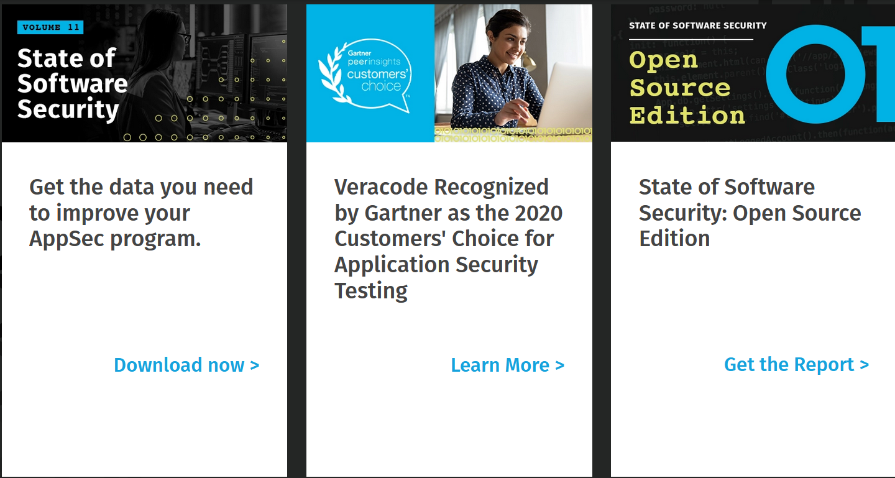
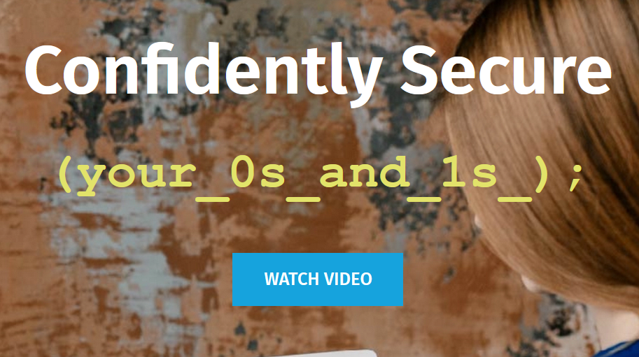
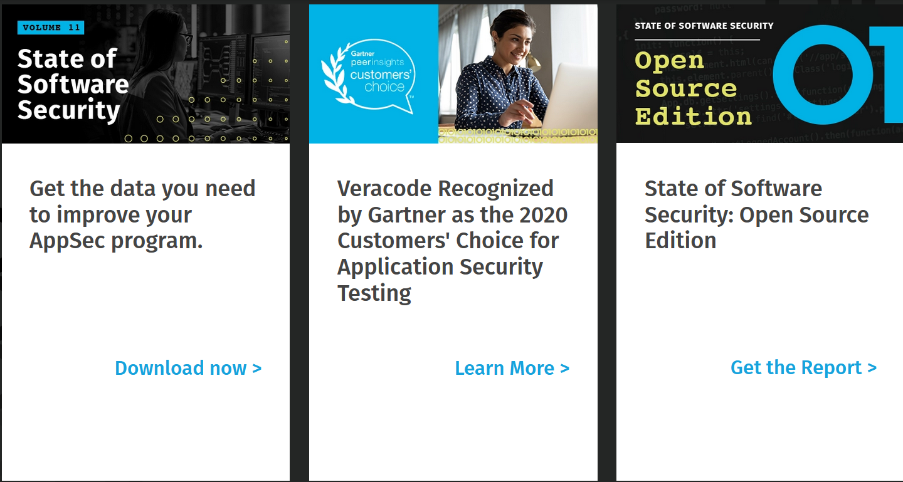

Lodewijk College (stagebedrijf)
Het Lodewijk College is een middelbare school in Terneuzen, verdeelt over 2 locaties.
De afdeling ICT op het Lodewijk College is verantwoordlijk voor operationeel houden van alle programmatuur, netwerkapparatuur en het geautomatiseertde informatiesysteem
Er hangt een informele sfeer, de werktijden zijn strikt, namelijk 8 tot 5.
Rollen binnen de ICT:
- Systeembeheerder; Een systeembeheerder zorgt er eigenlijk voor dat werknemers bij een organisatie zonder problemen met hun computer of software kunnen werken.
- Softwareontwikkelaar; Op basis van de behoeften van de eindgebruiker software ontwikkelt, schrijft, implenmenteert, test, verbetert en onderhoudt.
- IT-manager(Hoofd ICT); Is binnen de organisatie verantwoordelijk voor het plannen, aansturen of coördineren van IT activiteiten en stuurt IT-mensen als programmeurs aan.
Gebruikte technieken:
- Office 365 onderwijs; Is een abnonnementsformule van Microsoft, die bestaat uit de welbekende apps, zoals Word, Excel, Powerpoint, Outlook etc.
- Microsft Azure; biedt een divers scala aan diensten aan, waaronder Managed Database services. Waarmee men snel en eenvoudig complexe bedrijfsinterne services en applicaties kunnen bouwen, implementeren en beheren.
Programeertalen:
- PHP, JavaScript, Python

IT Synergy
IT Synergy is een ICT dienstverlener en biedt een veelzijdig pakket aan ICT-oplossingen zowel aan multinationals en midden- en kleinbedrijf.
Er hangt een informele, huiselijke sfeer. Hanteren een formele dresscode.
Rollen binnen de ICT:
- IT-manager; Is binnen de organisatie verantwoordelijk voor het plannen, aansturen of coördineren van IT activiteiten en stuurt IT-mensen als programmeurs aan.
- IT-Consultant; Als IT-Consultant ondersteun en adviseer je bedrijven en organisaties op het gebied van IT en informatica.
- Softwareontwikkelaar; Op basis van de behoeften van de eindgebruiker software ontwikkelt, schrijft, implenmenteert, test, verbetert en onderhoudt.
- Internetmarketeer; Dankzij de komst van internet zijn er mensen die zich hebben gespecialiseerd in de marketing via het internet.
- Systeembeheerder; Een systeembeheerder zorgt er eigenlijk voor dat werknemers bij een organisatie zonder problemen met hun computer of software kunnen werken.
- Fullstack developer; Een fullstack developer is een front-end en backend developer ineen. Deze programmeur maakt dus software voor servers (backend) en voor browsers (front-end).
- Webdesigner; Een webdesigner houdt zich bezig met de voorkant van een website of app. Je hebt webdesigners die zich alleen bezighouden met opmaak en het bewerken en maken van afbeeldingen en werken dan met Illustrator en Photoshop.
- Netwerk engineer; Een website heeft ergens een server staan waarop deze website draait. Deze server staat, vaak met duizenden andere servers, in een zogenaamde serverruimte. Een netwerk engineer zorgt er bijvoorbeeld voor dat een serverruimte gerealiseerd en onderhouden wordt.
Gebruikte technieken:
- Microsft Azure; biedt een divers scala aan diensten aan, waaronder Managed Database services. Waarmee men snel en eenvoudig complexe bedrijfsinterne services en applicaties kunnen bouwen, implementeren en beheren.
- VoIP; Over een internetverbinding maak je gebruik met VoIP het mogelijk om over internet te bellen. Een IP telefoon werkt dus via internet.
- RDS; RDS is een afkorting van Radio Data System en maakt het mogelijk om informatie mee te sturen over het FM signaal.
- On-premise; On-premise software lokaal geïnstalleerd en gedraaid op de computers van de persoon of organisatie die de software gebruikt.
Programeertalen:
- PHP, Java, C, Visual Basic .NET
  


  
 